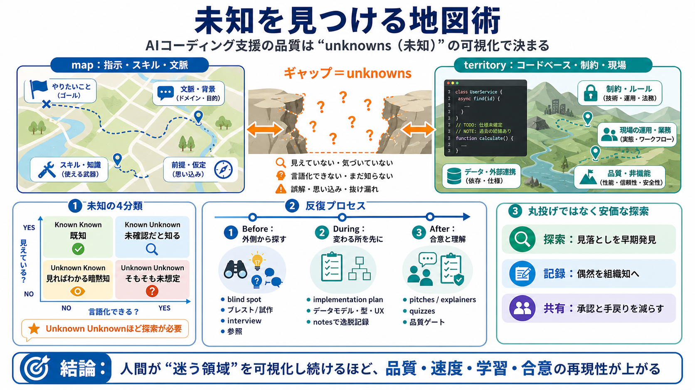

Claude Fable 5: What It Is and What Developers Need to ...
Jun 9, 2026 — Anthropic launched Claude Fable 5 June 9, 2026. It is the most capable model Anthropic has ever made gener…

Claude Code（Claudeを用いた自律/半自律のコーディング支援）では、品質の差は「モデル性能」より「未知（unknowns）をどれだけ明確化できるか」に寄る。
モデルが賢くても、ユーザーの意図や制約が「未知として残ったまま」進むと、AIの意思決定は推測に依存して方針がブレやすい。
未知は「単にわからない」ではなく、認識の状態で4つに分けると実務で扱いやすい。
未知は実装前だけでなく、実装中・実装後にも出る。さらに「解くべき問題」自体が変わることもある。
Unknown Unknownを減らすには、事前に正解を当てるより「見落としを発見する手順」を入れる。
implementation planは「全部を正確に」ではなく、変更が起きやすい要素を先に可視化するために使う。
implementation-notesは、計画から外れた理由と選択を残すことで、次回の探索コストを下げる。
pitches / explainers と quizzesで変更点を“読める形”にし、承認遅延と手戻りを減らす。
これらの手順は失敗して戻るコストを下げる“安価な探索”として働き、長期タスクの再現性を上げる。
実務では「未知の種類」「指示の粒度」「計画の役割」を取り違えないのが重要。
強みは“不確実性マネジメント”に焦点を移すこと。一方で、定量根拠や適用条件、チームガバナンスは不足している。
AIに仕事を丸投げするのではなく、未知に遭遇する場所を人間が可視化し続けることで、成果の品質と再現性が上がる。
Jun 9, 2026 — Anthropic launched Claude Fable 5 June 9, 2026. It is the most capable model Anthropic has ever made gener…
Claude Fable 5 is rolling out Jul 1, 2026 Access to Claude Fable 5 has been restored. It brings 5th-generation intellige…
Jun 9, 2026 — Today we're launching Claude Fable 5: a Mythos-class model that we've made safe for general use.
Jun 11, 2026 — Claude Fable 5 is Anthropic's most powerful publicly available model. Learn what it can do, how it differ…
Claude Fable 5 is Anthropic's most capable widely released model, built for the most demanding reasoning and long-horizo…